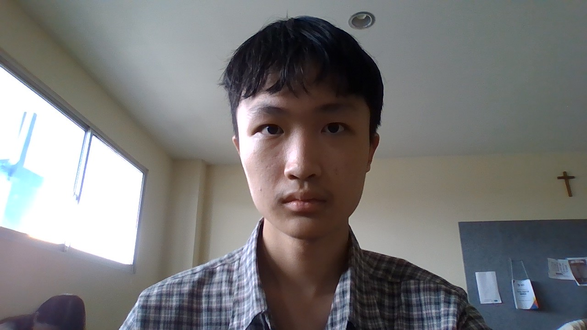

Stevan Ng
X TKJ 2 dari SMK Kristen Immanuel
Saya memiliki minat dalam membuat website! Saya telah belajar membuat website sejak masuk ke sekolah ini, dan sekarang saya berminat membuat sebuah website dengan desain yang menarik.
Cita-cita saya setelah lulus dari SMK ini adalah menjadi seorang programmer di perusahaan Big Tech. Saya sudah memiliki pengalaman coding sejak muda. Jadi, saya ingin mengembangkan skill saya di tempat ini.